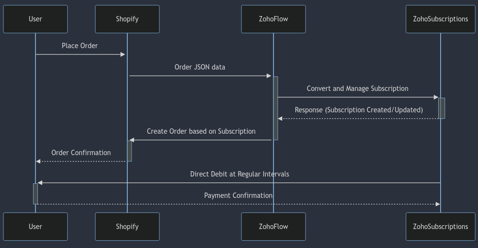

E-commerce has revolutionised the way we buy and fulfill orders online. While popular platforms like Shopify and WooCommerce excel at facilitating one-time purchases, they often fall short when it comes to managing recurring orders, such as monthly pet food or weekly prepped meals. Many businesses resort to installing plugins like Recharge or Bold to address this gap. However, consider a more cost-effective alternative: Zoho Subscriptions. Despite the popularity of Recharge and Bold, Zoho Subscriptions offers a comparable solution at a fraction of the cost. In this article, we'll explore how Zoho Subscriptions can achieve the same outcomes, providing a seamless and economical approach to handling recurring orders.
In this streamlined solution, Shopify takes center stage as the primary source of truth, initiating the process seamlessly upon payment completion for an order. Leveraging the power of Shopify webhooks, the entire data transmission to Zoho Subscriptions is automated, eliminating the need for constructing a portal or executing an API GET request. The 'Order JSON data' serves as a comprehensive package, containing all the essential information required for the creation of a subscription order within Zoho Subscriptions. Consequently, the webhook operation becomes simplified, focusing solely on pushing the order data through. Notably, the default order JSON output encompasses critical details such as contact information, shipping/billing details, currency, and the line items, facilitating a smooth and efficient integration between Shopify and Zoho Subscriptions.
Zoho Flow serves as the vital intermediary bridging the communication gap between Shopify and Zoho Subscriptions. Tasked with receiving the Order JSON data, this middleware employs custom code and field mapping to skillfully transform the incoming data into a format compatible with Zoho Subscriptions. In doing so, it efficiently creates or updates contact details, item specifics, and subscription information within Zoho Subscriptions.
Furthermore, Zoho Flow plays a pivotal role as a two-way integration facilitator, ensuring seamless communication between Zoho Subscriptions and Shopify. Notably, it actively pushes relevant order information back to Shopify, eliminating the need for users to navigate both systems independently. This bidirectional synchronisation streamlines data accessibility for system users, consolidating all pertinent information within the Shopify interface.
To enhance troubleshooting and maintenance, Zoho Flow diligently records any technical errors in a log file, conveniently accessible via the web. This comprehensive error log enables swift identification and resolution of issues, ensuring a resilient and error-free integration between Shopify and Zoho Subscriptions.
Zoho Subscriptions stands as the robust billing software dedicated to managing recurring orders and facilitating seamless automatic debiting from c ustomers' accounts. Its versatility shines through, offering compatibility with a wide array of payment gateways such as Stripe, Authorize.net, Payflow Pro, Payments Pro, PayPal, and many more. This expansive support for diverse payment options makes Zoho Subscriptions highly adaptable and well-suited to cater to a broad spectrum of customer bases, ensuring flexibility and convenience in the payment processing landscape.
Every nuance of information displayed within Shopify, spanning contact details, item specifics, and more, seamlessly undergoes a meticulous one-to-one replication process within Zoho Subscriptions. This meticulous process yields an exact duplicate of the data housed in Shopify, fortified by the distinctive features of Zoho Subscriptions. Beyond merely mirroring Shopify's data, Zoho Subscriptions distinguishes itself by autonomously tracking and managing subscriptions, offering a comprehensive solution for streamlined direct debiting associated with the provided products or services.
In a reciprocal dynamic, for each subscription generated within Zoho Subscriptions, a corresponding Order is seamlessly crafted inside Shopify, mirroring the pertinent order details. This symbiotic relationship ensures coherence and synchronization between the two platforms, contributing to a cohesive and efficient operational workflow.
The customer experience remains familiar, mirroring their existing order placement process. The key distinction in this enhanced solution lies in the automated periodic debiting, whether weekly, monthly, quarterly, or annually, from the customer's account. Additionally, Zoho Subscriptions efficiently generates and dispatches PDF invoices, providing customers with a transparent record of the payments received.
In conclusion, the seamless integration of Shopify with Zoho Subscriptions, facilitated by Zoho Flow, presents a transformative solution for businesses seeking streamlined order processing and automated recurring payments. This integration ensures a consistent and user-friendly experience for customers, preserving the familiarity of their order placement process. The innovative approach of Zoho Subscriptions, with its ability to handle periodic direct debiting and generate detailed PDF invoices, enhances operational efficiency and transparency. As businesses embrace this integration, they can anticipate a harmonised system that not only simplifies order management but also establishes a robust foundation for sustained growth and customer satisfaction. The collaborative synergy between Shopify, Zoho Flow, and Zoho Subscriptions opens new avenues for businesses to thrive in the dynamic e-commerce landscape.